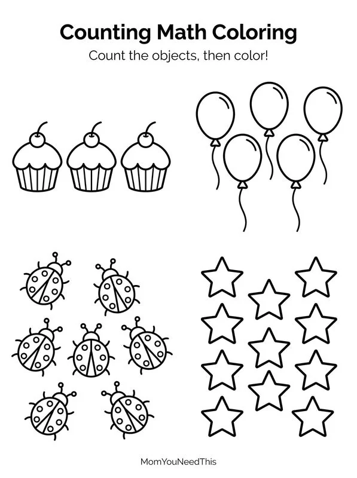
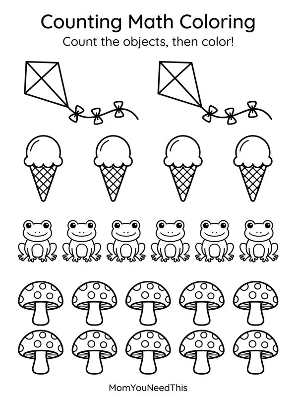
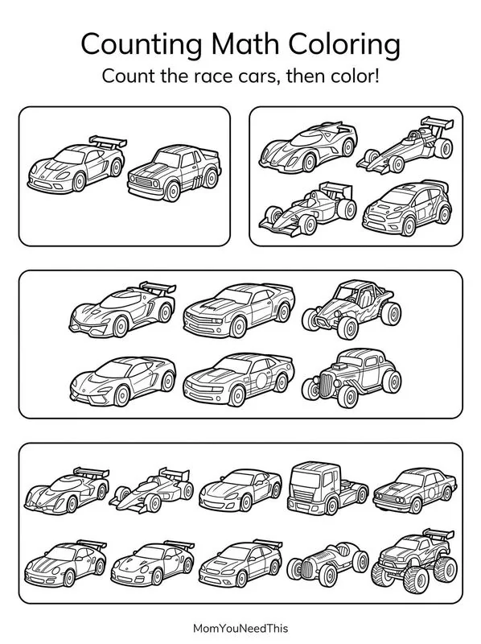
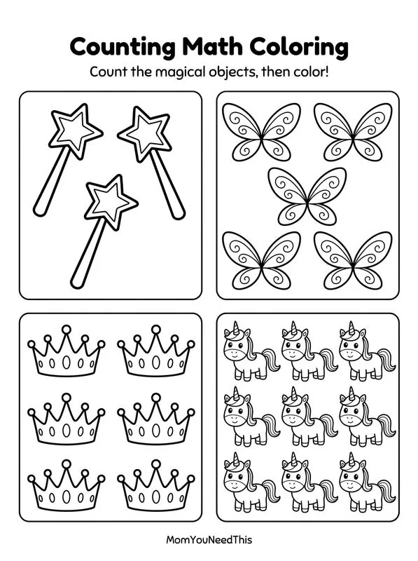
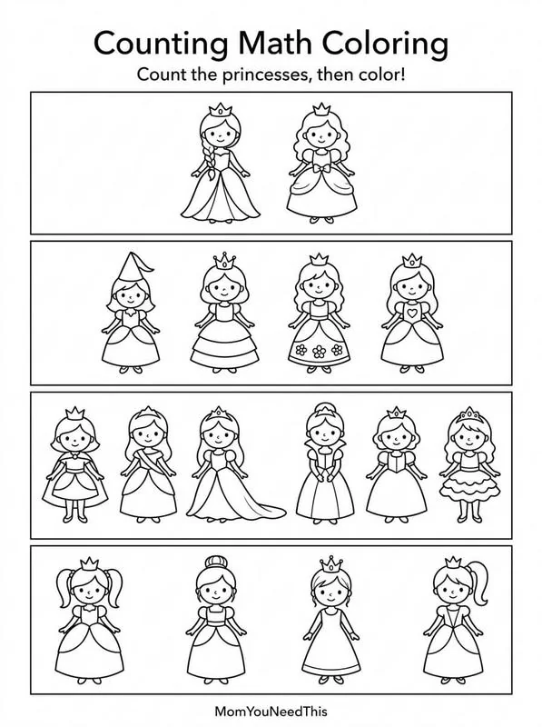
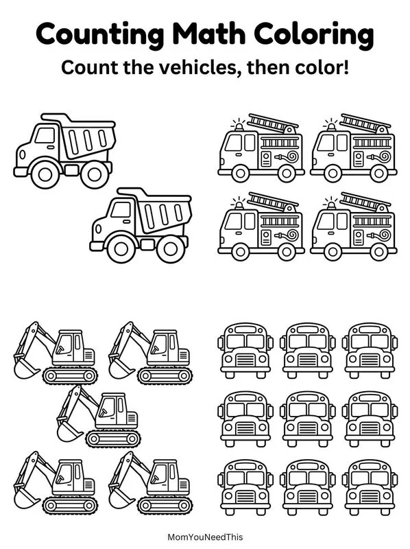

Math Coloring Pages Fun Early Math Learning For Toddlers & Preschoolers
This free printable math coloring pages gives toddlers and preschoolers a fun, no-prep way to build creativity and fine motor skills. Just download, print, and let them color. Each sheet is one of our preschool math activities worksheets — count first, then color.
Quick Answer
Count first, then color: these math coloring pages turn early counting into a game for toddlers and preschoolers. Six free sheets are ready here — two counting sets plus fast cars, magical fun, princess and vehicles themes. Kids count the objects on each sheet, then color it in. Download, print at home, no signup.
At a Glance
- Ages: Toddlers and preschoolers
- Activity: Counting math coloring sheets in fun themes
- Skills: Counting and coloring
- Format: Printable coloring pages (PDF)
- Cost: Free, no signup
Counting Math Coloring Pages

🎨 Download Your Free Counting Math Coloring Pages
Count cupcakes, balloons, ladybugs and stars, then color them in!
⬇️ Download Counting Math Coloring Page 🖨️ Print(opens in new tab)🎁 Free printable for toddlers & preschoolers
Counting Math Coloring Fun

🎨 Download the Counting Math Coloring Fun
Count kites, ice cream, frogs and mushrooms, then color them in!
⬇️ Download Counting Math Coloring Fun 🖨️ Print(opens in new tab)🎁 Free printable for toddlers & preschoolers
Counting Math Coloring: Fast Cars

🎨 Download the Counting Math Coloring: Fast Cars
Count the speedy race cars, then color them in!
⬇️ Download Fast Cars 🖨️ Print(opens in new tab)🎁 Free printable for toddlers & preschoolers
Counting Math Coloring: Magical Fun

🎨 Download the Counting Math Coloring: Magical Fun
Count the magical pictures, then color them in!
⬇️ Download Magical Fun 🖨️ Print(opens in new tab)🎁 Free printable for toddlers & preschoolers
Counting Math Coloring: Princess

🎨 Download the Counting Math Coloring: Princess
Count the pretty princess pictures, then color them in!
⬇️ Download Princess 🖨️ Print(opens in new tab)🎁 Free printable for toddlers & preschoolers
Counting Math Coloring: Vehicles

🎨 Download the Counting Math Coloring: Vehicles
Count the vehicles, then color them in!
⬇️ Download Vehicles 🖨️ Print(opens in new tab)🎁 Free printable for toddlers & preschoolers
🔢 How Many Can You Count?
Every sheet is a counting puzzle: count each group of pictures out loud together, then color them in. The groups run from 2 up to 11, so little counters practise the numbers to 10 — and one group of stars goes a step further, to 11. Pick the sheet that matches where your child is:
- Counting Math Coloring Pages: 3 cupcakes, 5 balloons, 7 ladybugs and 11 stars — the biggest counting challenge of the set.
- Counting Math Coloring Fun: 2 kites, 4 ice cream cones, 6 frogs and 10 mushrooms — counting up to 10.
- Counting Math Coloring: Fast Cars: four boxes to count — 2, 4, 6 and 10 cars, 22 vehicles in all.
- Counting Math Coloring: Magical Fun: 3 magic wands, 5 butterflies, 6 crowns and 9 unicorns — counting up to 9.
- Counting Math Coloring: Princess: four rows of princesses with 2, 4, 6 and 4 in a row — 16 princesses in all, and no row asks for more than 6.
- Counting Math Coloring: Vehicles: 2 dump trucks, 4 fire trucks, 5 excavators and 9 buses — 20 vehicles in all.
There is no set order to the sheets — start with the theme your child loves most, and save the 11 stars for when counting to 10 feels easy.
➕ How To Use This Printable
- Download and print the coloring page on letter-size paper — print a few extras so there is no fighting over favorites.
- Set out crayons, markers, or colored pencils and let your child choose their colors.
- Color together or side by side, chatting about the pictures as they come to life.
- Show off the masterpiece on the fridge or in a learning binder to celebrate the effort.
Why Math Coloring Pages Help Kids Learn
Math coloring activities combine creativity with early learning. Children practice counting and early number sense while developing focus and fine motor skills. Each page works as one of the gentlest math worksheets for preschool: count the objects, then color them in.
🔢 More Early Math Activities
Continue learning with number coloring pages, counting worksheets, tracing activities, patterns, shapes, and other preschool math resources.
🔢 Number Coloring Pages🧮 Keep Practising Early Math
When counting the pictures here starts to feel easy, keep going with the next early math steps:
- Number Coloring Pages — a coloring page for every number from 1 to 10, plus a matching tracing page for each one.
- Counting Activities — counting worksheets and How Many? activities that build from counting to 5, then 10 and beyond.
- Number Tracing Pages — guided lines for learning to write every number from 1 to 10.
More Free Kids Resources
Explore alphabet activities, educational coloring pages, preschool worksheets, and printable resources designed for toddlers and young learners.
🎁 View All Free Resources❓ Math Coloring Pages FAQ
Is this math coloring pages printable really free?
Yes — this math coloring pages printable is 100% free to download and print at home. No signup and no payment needed. Just tap the download button and print as many copies as you like.
What ages is this printable best for?
It is made for toddlers and preschoolers. Little ones can enjoy it with a grown-up’s help, while older preschoolers can work on it more independently.
What should we color with?
Crayons, washable markers, or colored pencils all work great. For young toddlers, chunky crayons are the easiest to grip.
Are math coloring pages good math activities for preschoolers?
Yes — counting and coloring go together here: your preschooler counts the objects on each page and colors them in, building number recognition while they play.
🔗 More Free Printables You’ll Love
- Free Alphabet Coloring Pages Free printable alphabet coloring pages for little learners.
- Free Letter B Coloring Pages Free printable letter b coloring pages for little learners.
- Free Letter C Coloring Pages Free printable letter c coloring pages for little learners.
- Free Mermaid Coloring Pages Free printable mermaid coloring pages for little learners.